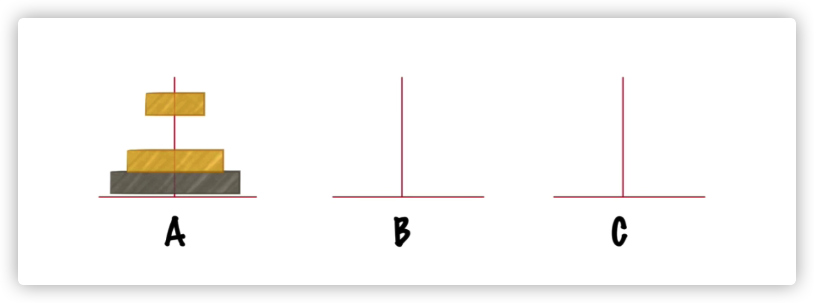
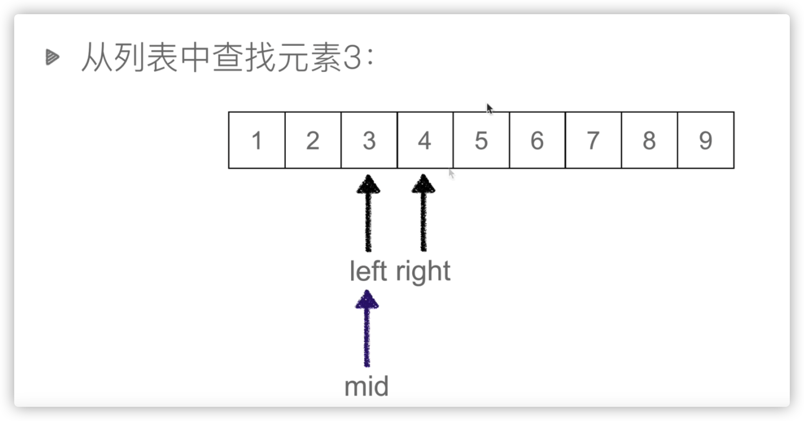
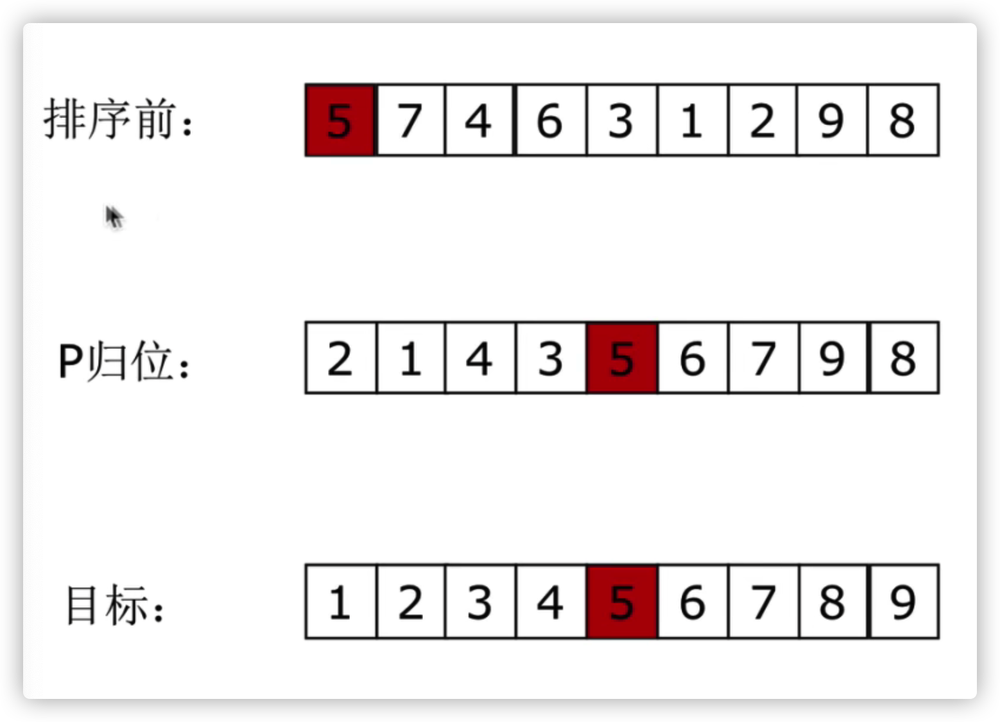

递归
递归的两个特点：
- 调用自身
- 结束条件
两个递归实例：
先打印结果再调用自身
1 | def func1(x): |
结果：
1 | 5 |
先调用自身再打印结果
1 | def func2(x): |
结果
1 | 1 |
汉诺塔（hanoi）

思考
n个盘子时：
- 把n-1个盘子从A经过C移动到B
- 把第n个盘子从A移动到C
- 把n-1个小盘子从B经过A移动到C
1 | # n个盘子，a、b、c三个柱子 |
输出结果：
1 | moving from A to C |
查找
列表查找（Linear Search）
列表查找（线性表查找）：从列表中查找指定元素
- 输入：列表、待查找元素
- 输出：元素下标（未找到元素时一般返回None或-1）
内置列表查找函数：index（）
顺序查找：也叫线性查找，从列表第一个元素开始，顺序搜索，直到找到元素或搜索到列表最后一个元素为止
1 | #传入一个列表，与要查找的值 |
时间复杂度：O(n)
二分查找（Binary Search）
二分查找：又叫折半查找，从有序列表的初始候选区li[O:n]开始 ，通过对待查找的值与候选区域中间值得比较，可以使候选区减少一半
二分查找需要先排序，但是有可能排序时间要远多于线性查找O(n)，所以如果你对这个列表需要以后的多次查找，可以使用二分查找
Python的内置查找函数：.index()是线性查找的，因为没办法确定列表是有序的

1 | def binarySearch(li,val): |
时间复杂度：O(logn)
排序
常见排序书算法
排序Low B三人组
- 冒泡排序
- 选择排序
- 插入排序
排序NB三人组
- 快速排序
- 堆排序
- 归并排序
其他排序
- 希尔排序
- 计数排序
- 基数排序
列表排序
- 列表排序：将无序的列表变为有序的列表
- 输入：列表
- 输出：有序列表
- 升序与降序
- 内置排序函数：sort()
冒泡排序（Bubble Sort）
- 列表每两个相邻的数，如果前面比后面大，则交换这两个数。
- 一趟排序完成后，则无序区减少一个数，有序区增加一个数。
1 | def bubbleSort(li): |
选择排序 （Select Sort）
- 一趟排序记录最小的数，放到第一个位置
- 再一趟排序记录记录列表无序区最小的数，放到第二个位置
- 算法关键点：有序区和无序区、无序区最小数的位置
方法一「不推荐」
1 | def select_sort(li): |
- min()函数的时间复杂度为O(n)
- remove()函数的时间复杂度为O(n)，因为删除列表的一个个数后，需要将被删除数后的其他数一一移动一个位置
- 因为新创建了一个列表，所以他的空间复杂度也增加了
方法二
1 | def select_sort(li): |
插入排序（Insert Sort）
- 初始时手里（有序区）只有一张手牌
- 每次（从无序区）摸一张牌，插入到手里已有牌的正确位置
1 | def insert_sort(li): |
- 时间复杂度为：O(n^2)
快速排序（Quick_sort）
- 取一个元素p（第一个元素），使元素p归位；
- 列表被p分成两部分，左边都比p小，右边都比p大
- 递归完成排序

快速排序-框架
1 | def quick_sort(data,left,right): |